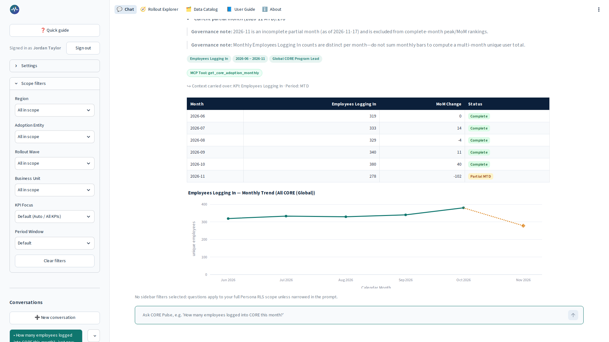
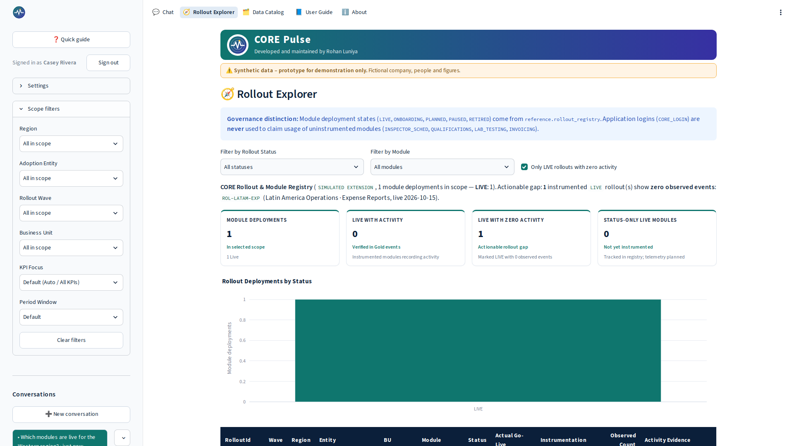
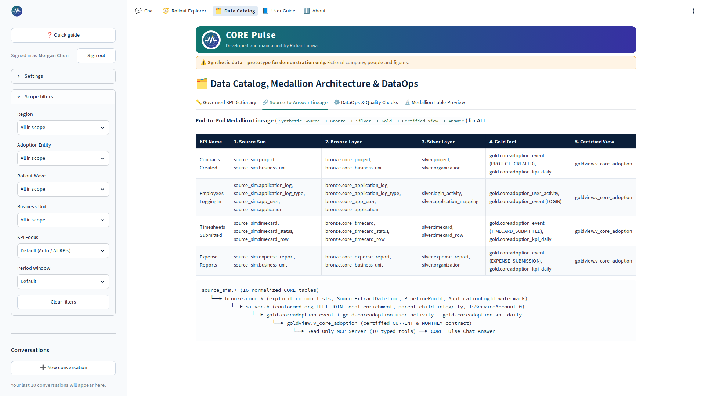

Live Walkthrough · Chapter 2
Natural Follow-Up Questions & Automatic User Deduplication


Conversational Flow
- Remembers Context: Ask
How many employees logged in this month?then simply sayShow the six-month trend. - Partial-Month Visual Cue: In-progress November plots as an amber dotted diamond so no one misreads it as a drop.
- Smart Wave Breakdown: Shows Wave 1–4 active users alongside the true deduplicated global total (
419). - One-Click Proof & Export: Download CSV/Excel or expand
How I got thisfor lineage and SQL.
Live Walkthrough · Chapter 3
Tracking Rollout Go-Live vs. Actual Field Usage


Actionable Rollout Tracking
- Business Language Mapping: Asking about the
Western regionmaps automatically to Americas (AMER). - Go-Live vs. Real Activity: Compares rollout tracker status directly against recorded Gold transactions.
- Clear Module Scope: Distinguishes instrumented Release 1 modules from status-only future modules.
- Instant Gap Detection: Spotlights Latin America Expenses — marked
LIVEsince October with zero submissions.
Live Walkthrough · Chapter 5
Self-Service Data Catalog, Lineage & Pipeline Health


Complete Transparency
- Plain-English KPI Dictionary: Business and BI teams read the exact same metric rules inside the app.
- Source-to-Answer Lineage: Traces every KPI from operational tables through Bronze, Silver, and Gold to the answer.
- Live Pipeline Health: Displays refresh timestamps, incremental load watermarks, and quality checks.
- Exception Visibility: Surfaces quarantined test apps and orphan records openly without skewing KPIs.